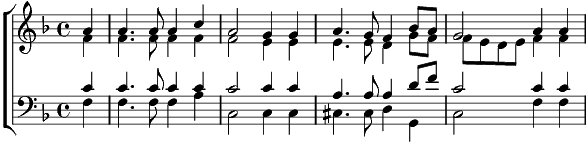

1. Wohin soll ich mich wenden, wenn Gram und Schmerz mich drücken?
Wem künd ich mein Entzücken, wenn freudig pocht mein Herz?
Zu dir, zu dir, o Vater, komm ich in Freud und Leiden.
Du sendest ja die Freuden, du heilest jeden Schmerz.
2. Ach, wenn ich dich nicht hätte, was wär mir Erd und Himmel?
Ein Bannort jede Stätte, ich selbst in Zufalls Hand.
Du bist's, der meinen Wegen ein sichres Ziel verleihet
und Erd und Himmel weihet zu süßem Heimatland.
3. Doch darf ich dir mich nahen, mit mancher Schuld beladen?
Wer auf der Erde Pfaden ist deinem Auge rein?
Mit kindlichem Vertrauen eil ich in Vaters Arme,
fleh reuerfüllt: Erbarme, erbarm, o Herr, dich mein!